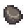

Piedra
| Piedra | |
|  | |
| Un material común con múltiples usos en la construcción y la fabricación de objetos. | |
| Información | |
| Origen | Rocas • Carpintería • Cofres del tesoro (pesca) |
| Precio de venta | |
La Piedra es un recurso básico obtenida al picar rocas con un Pico. También se puede comprar a Robin en la Carpintería por  20o en el año 1, o
20o en el año 1, o  100o en el año 2, o encontrarse en cofres del tesoro.
100o en el año 2, o encontrarse en cofres del tesoro.
De las rocas normales se obtiene entre 1-3 piedras. Las rocas grandes sueltan 10 de piedra.
La Piedra es un recurso con múltiples usos en la Fabricación y también se necesita cuando se compran ciertos edificios, construcciones y mejoras en la Carpintería.
Estrategia
Un método para obtener rápidamente piedra en grandes cantidades es picando rocas grandes en Las minas. Entra en las minas por la escalera hasta el primer nivel. Pica todas las rocas grandes que veas, ignorando las pequeñas. Cuando no haya más, sal de las minas y vuelve al nivel 1 de nuevo. Ya que los niveles se generan automáticamente cada vez que entras, siempre hay posibilidad de que salgan nuevas rocas grandes. "Actualizando" constantemente el primer nivel y picando rocas grandes puedes llegar a conseguir unos 500 de piedra al día.
Si se está en una etapa avanzada en el juego, una manera para conseguir cantidades industriales es con deconstructores y escaleras, estas siendo obtenidas del Comerciante del desierto por el precio de un Jade cada una, la escalera daría 99 de piedra si se usa en el deconstructor, así con varios ejemplares, se conseguiría miles de piedra en un día.
Recetas
| Imagen | Nombre | Descripción | Ingredientes | Se consigue |
|---|---|---|---|---|
| Valla de piedra | Dura más que la de madera. | |||
| Mayonesera | Convierte los huevos en mayonesa. | |||
| Envasadora | Convierte las verduras en encurtidos y la fruta en mermelada. | |||
| Prensa de queso | Convierte la leche en queso. | |||
| Hidrogel básico | Es posible que la tierra se mantenga regada durante la noche. Úsalo sobre suelo arado. | |||
| Hidrogel deluxe | Es muy probable que la tierra se mantenga regada durante la noche. Úsalo sobre suelo arado. | |||
| Fertilizante de árboles (1) | Espolvorear sobre un árbol salvaje para asegurar un crecimiento rápido, incluso en invierno. No funciona para árboles de fruta. |
|
||
| Suelo de piedra | Colócalo para crear caminos o adornar tus suelos. | Carpintería | ||
| Camino de gravilla | Colócalo para crear caminos o adornar tus suelos. | Por defecto | ||
| Camino de guijarros | Colócalo para crear caminos o adornar tus suelos. | Por defecto | ||
| Camino de piedras | Colócalo para crear caminos o adornar tus suelos. | Carpintería | ||
| Estatua maldita | El aspecto de esta estatua es algo inquietante. | |||
| Bloque tambor | Suena como un tambor cuando lo pisas. | Carpintería | ||
| Hoguera | Proporciona una cantidad moderada de luz. | Por defecto | ||
| Brasero de piedra | Proporciona una cantidad moderada de luz. | |||
| Brasero de mármol | Proporciona una cantidad moderada de luz. | |||
| Horno | Convierte menas y carbón en lingotes de metal. | |||
| Escalera | Utilízala para bajar un piso en las minas. | |||
| Cristalario | Introduce la gema que quieras y hará copias. | |||
| Máquina recicladora | Convierte la basura pescada en recursos. | |||
| Tótem de viaje: Montaña | Teletranspórtate directamente a la montaña. Se consume al usarlo. | |||
| Anillo de espinas | Cuando los enemigos te dañan, recibirán daño ellos mismos. | |||
| Prensa de geodas | Rompe geodas automáticamente. | |||
| Molino de huesos | Convierte huesos en fertilizante. | |||
| Cofre de piedra | Un lugar para guardar tus objetos. | |||
| Cofre Grande de Piedra | Puede almacenar el doble de objetos que un cofre estándar. |
| ||
| Estatua de las Bendiciones | Tocar la estatua da una bendición distinta cada día. |
Edificios
Se requiere piedra para la Cabaña junimo en la Torre del Mago, y para varios edificios comprados en la Carpintería.
| Imágen | Nombre | Descripción | Coste | Tamaño |
|---|---|---|---|---|
 |
Cabaña junimo | Los junimos cosecharán por ti los cultivos que haya junto a la cabaña. | 3x2 | |
 |
Establo | Alberga 4 animales de establo. | 7x4 | |
 |
Establo grande | Alberga 8 animales de establo. Permite a los animales dar a luz. Desbloquea las cabras. | 7x4 | |
 |
Establo de lujo | Alberga 12 animales de establo. Incluye un sistema de autoalimentación. Desbloquea las ovejas y los cerdos. | 7x4 | |
 |
Corral | Alberga 4 animales de corral. | 6x3 | |
| Corral grande | Alberga 8 animales de corral. Incluye una incubadora. Desbloquea los patos. | 6x3 | ||
 |
Corral de lujo | Alberga 12 animales de corral. Incluye un sistema de autoalimentación. Desbloquea los conejos. | 6x3 | |
 |
Molino | Te permite crear harina a partir de trigo y azúcar a partir de remolachas. | 4x2 | |
 |
Silo | Te permite segar y acumular hierba para alimentar a tus animales. | 3x3 | |
 |
Criadero de babas | Cría hasta 20 babas. Llena los abrevaderos y las babas crearán bolas de baba. | 11x6 | |
 |
Pozo | Te proporciona un lugar para rellenar tu regadera. | 3x3 | |
 |
Estanque de peces | Cría peces para recolectar su producción. Los peces se multiplican con el tiempo. | 5x5 |
Regalos
| Reacciones de Aldeanos
| |
|---|---|
| No le gusta | |
| Recursos | |
|---|---|
| Básico | Arcilla • Carbón • Fibra vegetal • Madera noble • Piedra • Madera • Musgo • Pila |
| Menas | Mena de cobre • Mena de hierro • Mena de oro • Mena de iridio • Mineral radiactivo |
| Lingotes | Lingote de cobre • Lingote de hierro • Lingote de oro • Lingote de iridio • Cuarzo refinado • Lingote radiactivo |